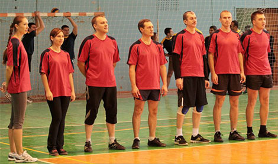

СПОРТИВНЫЕ НОВОСТИ
Волейбол
Команда КП «ХТС» на соревнованиях, проходивших 14-15 ноября в спортивном корпусе Харьковского национального университета городского хозяйства и собравших 16 команд, разбитых на 4 группы, выступила крайне неудачно. В состав команды еле насобирали семь желающих: Лукьянченков Виктор, Галкин Константин, Иваненко Ольга, Гармаш Наталия, Яритенко Олег, Зинченко Роман и Заварзин Игорь. Команда провела две
тренировки, в которых участвовали только пять из перечисленных спортсменов. В первом же матче группы мы проиграли будущим чемпионам, во втором матче уступили команде, занявшей 4-е место – Центру доктора Бубновского. Наша команда вылетела из группового этапа, заняв последнее место в группе, но, за счёт того, что одна партия была проиграна 1-2, команда заняла 14 место в общем зачёте. Тройка призёров в этом виде спорта выглядит так: I – Приватбанк, II – Укрнафта, III – Gym4Fit.
Бадминтон
До соревнований, проходивших 12 декабря в школе высшего спортивного мастерства, команда «Тепловых сетей» провела ряд тренировок. В этом виде спорта участвовало 20 команд, каждая из которых должна была делегировать на соревнования: мужчину, женщину и смешанную пару.
Участниками нашей сборной стали: Артём Воронов, Наталия Гармаш и дуэт Олег Яритенко - Татьяна Лещинская. Все ребята дошли до стадии четвертьфиналов. Артём Воронов занял седьмое место в мужском одиночном разряде. Наталия Гармаш заняла седьмое место среди женщин. Наш дуэт: Яритенко-Лещинская занял шестое место.
Места для участников, проигравших в четвертьфинале, распределялись по дополнительным показателям.
Высокие индивидуальные места помогли нашей команде
занять пятое командное место по бадминтону.
Тройка призёров в бадминтоне выглядит следующим образом:
I – Водоканал, II – Проминвестбанк,
III – Водоканал-2.
Боулинг
В экзотическом виде спорта мероприятия «Битва корпораций», нашу команду преследовало фантастическое невезение.
По условиям организаторов, в состав команды должна была войти одна девушка. Внутренний отбор прошли четыре человека: Олег Яритенко, Константин Галкин, Виктор Лукьянченков и Ольга Иваненко. Эти же люди представили команду на соревнованиях, проходивших в клубе «Мисто».
Отборочные соревнования среди 20 команд, наша команда завершила на 12-м месте с результатом 812 очков (два круга). Команда Unicredit bank, набравшая 866 очков, заняла 10-е проходное место в квалификации. Победителем квалификации стала команда «Freshline», показав результат 1012 очков. Далее были полуфиналы и финалы, которые проводились уже в один круг. Нашей команде можно было выступить и лучше, но не хватило командного духа и психологии.
Тройка призёров в этом виде выглядит так: I – «Альфа-банк» – 517, II – «Freshline» - 463, III – «Adidas» - 450.
Настольный теннис
Основными требованиями для участия в соревнованиях любой команды, было заявка на участие в мужском и женском одиночном разрядах, а также в парном мужском и женском разрядах. Проходили соревнования 28 февраля в фитнес-центре «KING» и собрали 16 участников.
Сильнейший наш теннисист Александр Шовковый успешно прошёл групповой этап и направился в 1/4 финала для игры на вылет. В четвертьфинале Александр столкнулся с будущим чемпионом соревнований – представителем «Центра доктора Бубновского», легитимность трудоустройства которого в этой организации до сих пор под сомнением. К сожалению, здесь был счёт 0-2 по партиям не в нашу пользу. Учитывая дополнительные показатели, Александру Шовковому дали 5-е итоговое место.
Наталия Гармаш представляла «ХТС» в женском одиночно зачёте. Имея малый опыт игры в настольный теннис, но большое желание, Наталия выбыла на групповом этапе. Ей удалось одержать одну победу в группе, что позволило ей занять 11 место.
Наша смешанная пара по теннису, состоящая из Вячеслава
Педченко и Ольги Иваненко, стала участником
самой драматичной истории этого чемпионата по теннису.
Ребята выиграли две партии и одну проиграли.
Они начали готовиться к 1/4 финала, но оказалось, что